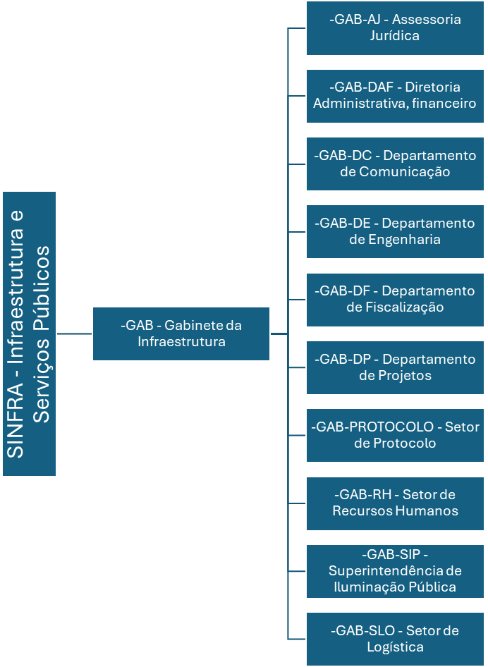

Sobre a SINFRA
A Secretaria Municipal de Infraestrutura e Serviços Públicos (SINFRA) executa e supervisiona obras públicas, transportes, energia, habitação, saneamento básico e edificações. A SINFRA fiscaliza os serviços de limpeza pública urbana e de coleta e destino de lixo, em cooperação com a Secretaria Municipal de Meio Ambiente, além de proporcionar melhorias da infraestrutura básica e comunitária no meio rural.
Informações de Contato
- Atendimento: 8h às 12h de segunda a sexta
- Email: sinfra@imperatriz.ma.gov.br
- Endereço: Rua Y, s/n – Nova Imperatriz
Dados da Secretaria
- Funcionários Efetivos: 35
- Agente Político: 1
- Funcionários Nomeados: 62
- Funcionários Contratados: 14
- Folha Bruta: R$ 357.248,53
- Maior Salário: Engenheiro Civil - R$ 12.717,75
- Menor Salário: Agente de Defesa Civil - R$ 1.212,00
- Salário do Secretário: R$ 14.800,00
Organograma
- SINFRA - Infraestrutura e Serviços Públicos
- GAB - Gabinete da Infraestrutura
- GAB-AJ - Assessoria Jurídica
- GAB-DAF - Diretoria Administrativa, Financeiro
- GAB-DC - Departamento de Comunicação
- GAB-DE - Departamento de Engenharia
- GAB-DF - Departamento de Fiscalização
- GAB-DP - Departamento de Projetos
- GAB-PROTOCOLO - Setor de Protocolo
- GAB-RH - Setor de Recursos Humanos
- GAB-SIP - Superintendência de Iluminação Pública
- GAB-SLO - Setor de Logística
- GAB - Gabinete da Infraestrutura